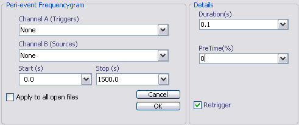

Peri-event frequencygram
Email: sigtool@kcl.ac.uk

Email: sigtool@kcl.ac.uk
Author: Malcolm Lidierth
Updated: June 2008
A peri-event frequencygram plots the instantaneous frequency of a source channel as a function of time following an event on a trigger channel. Such displays can reveal the timecourse of the underlying EPSP/IPSPs (see Türker & Powers, 2005).

Select the trigger channels in the Channel A selector and source channels using the Channel B selector. Any channels with multiple events can be selected.
Sets the timebase for the resulting plot.
Sets the pre-time as a percentage of the duration.
The Retrigger checkbox is selected by default: triggers that fall during a preceding sweep will be used to trigger a subsequent sweep.
Unchecking the Retrigger box will cause triggers that fall before the end of a preceding sweep to be ignored (this option is more typically used with post-event time histograms).
K.S. Türker & R.K. Powers (2005) Black box revisited: a technique for estimating postsynaptic potentials in neurons, TINS, 28, 379-386 [Link].
© The Author and King's College London, 2008-